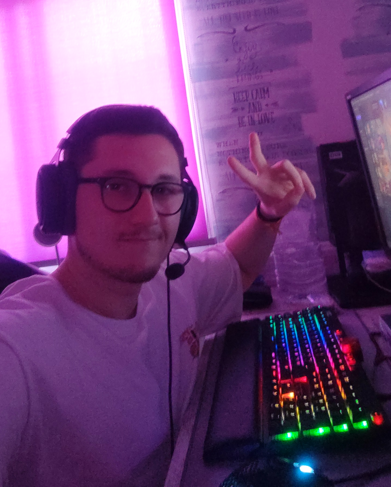

Haz click para acceder a mi cuenta de GitHub -> (ualfranborjagc)
·Bienvenidos a mi perfil, mi nombre es Francisco de Borja José Gutiérrez Carrasco, pero al tener un nombre tan largo me podeis llamar Fran o Borja (Ahorras tiempo, te atiendo igual 😉).
·Actualmente me encuentro cursando mi 4º año, pero por cuestiones de la vida, la carrera me la sacaré en 5 ya que hay asignaturas que me han encantado tanto que voy a repetirlas.
·Como hobbies, me encantan los videojuegos (desgraciadamente el League Of Legends el que más), y me gusta mucho el mundo de la informática/tecnología, por lo que le dedico un gran tiempo a mejorar mis habilidades en este campo.